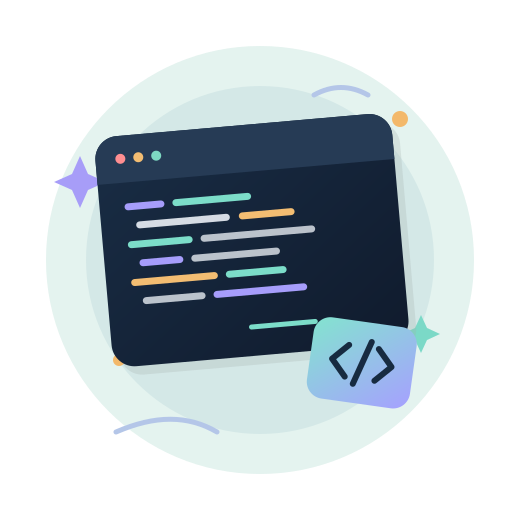

Em andamento
Bacharelado em Engenharia de Software
Universidade Tecnológica Federal do Paraná — UTFPR
Campus Dois Vizinhos · Paraná, Brasil
Estudos em programação, orientação a objetos, bancos de dados, modelagem e arquitetura de software.
Estudante de Engenharia de Software
Estou construindo minha trajetória na tecnologia, aprendendo a transformar problemas em soluções de software claras, úteis e bem organizadas.

Aprender · Criar · Evoluir
Um pouco sobre mim
Sou estudante de Engenharia de Software na Universidade Tecnológica Federal do Paraná (UTFPR), Campus Dois Vizinhos. Tenho interesse em desenvolvimento de sistemas, modelagem de software e bancos de dados.
Durante a graduação, venho desenvolvendo minha base em programação, lógica, arquitetura e organização de projetos. Gosto de entender como as partes de um sistema se conectam, colaborar em atividades acadêmicas e aprender com cada desafio.
Minha jornada
Uma base construída com estudo, prática e projetos.
Em andamento
Universidade Tecnológica Federal do Paraná — UTFPR
Campus Dois Vizinhos · Paraná, Brasil
Estudos em programação, orientação a objetos, bancos de dados, modelagem e arquitetura de software.
Prática e aprendizado
Exemplos de temas trabalhados em estudos e atividades acadêmicas.
Modelagem de software
Modelagem de um e-commerce com requisitos e diagramas UML, como casos de uso, classes, sequência e atividades.
Arquitetura de software
Proposta de sistema para organizar receitas, despesas e objetivos financeiros, explorando o estilo arquitetural Dutos e Filtros.
Programação e persistência
Estudo de uma aplicação Java em camadas, com interface gráfica, operações CRUD e relacionamento entre entidades.
Os itens acima apresentam estudos e trabalhos acadêmicos; o conteúdo pode ser atualizado conforme os projetos evoluírem.
O que venho desenvolvendo
Estou fortalecendo meus conhecimentos com exercícios, projetos acadêmicos e prática contínua.
Vamos conversar?
Estou aberta a trocar conhecimentos, conversar sobre tecnologia e conhecer oportunidades de aprendizado.
Antes de publicar, substitua os endereços acima pelos links reais dos seus perfis.